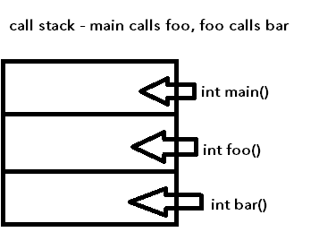
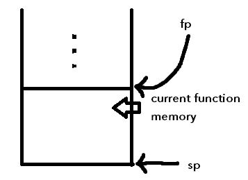

Review from last lecture
The heap is slow because of fragmentation - data can be like this:
- A
- B
- C
Then, B is deleted, creating a "memory hole":
- A
- _
- C
This causes searching to take longer.
Stack and functions

- The stack has an (artificially) limited size, imposed by the computer
- Exceeding this limit causes what is known as a "stack overflow"
Some code examples:
// huge static array
// if size is too big, could cause stack overflow
double nums[1000];
// dynamic array (NOT covered [prohibited in fact] in this class)
double nums[x]; // where x is defined earlier
// dynamically allocated array (the correct way to do it)
vector<double> nums[100000000];
// incorrect way to do it - static array would be too big
// and this would cause a stack overflow
double* nums = new double[100000000];
Another way to cause a stack overflow is with recursive functions:
- A recursive function is a function that calls itself
- If recursive functions go too deep into the stack, it will cause a stack overflow
Frames:
- The piece of a stack used by a function is the "frame" or "call frame"
- In addition to the sp (stack pointer) there may also be an fp (frame pointer) that points to the bottom of the frame (see diagram), depending on the architecture
- In this class we ignore the frame pointer, even though MIPS has it. Just use stack pointer for simplicity

Functions
- A function is a named piece of code that we can run ("call") from other places in code
- Once a function is done, execution returns to where the function was called
- Return address - the address of the next instruction after the function call
- A function should always know its return address